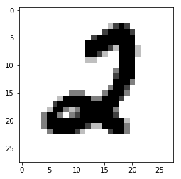

手写数字的识别
1.提出问题
根据整理好的mnist数据集，能够进行十种手写数字的识别。
# 导包
import tensorflow as tf
from tensorflow.examples.tutorials.mnist import input_data
import numpy as np
import matplotlib.pyplot as plt
2.数据的收集
# 读入数据集
mnist = input_data.read_data_sets("datasets/",one_hot=True)
print("mnist数据集下载完毕....")
WARNING:tensorflow:From <ipython-input-3-e259b1bad7dd>:2: read_data_sets (from tensorflow.contrib.learn.python.learn.datasets.mnist) is deprecated and will be removed in a future version.
Instructions for updating:
Please use alternatives such as official/mnist/dataset.py from tensorflow/models.
WARNING:tensorflow:From /Library/Frameworks/Python.framework/Versions/3.6/lib/python3.6/site-packages/tensorflow/contrib/learn/python/learn/datasets/mnist.py:260: maybe_download (from tensorflow.contrib.learn.python.learn.datasets.base) is deprecated and will be removed in a future version.
Instructions for updating:
Please write your own downloading logic.
WARNING:tensorflow:From /Library/Frameworks/Python.framework/Versions/3.6/lib/python3.6/site-packages/tensorflow/contrib/learn/python/learn/datasets/base.py:252: _internal_retry.<locals>.wrap.<locals>.wrapped_fn (from tensorflow.contrib.learn.python.learn.datasets.base) is deprecated and will be removed in a future version.
Instructions for updating:
Please use urllib or similar directly.
---------------------------------------------------------------------------
SSLError Traceback (most recent call last)
/Library/Frameworks/Python.framework/Versions/3.6/lib/python3.6/urllib/request.py in do_open(self, http_class, req, **http_conn_args)
1317 h.request(req.get_method(), req.selector, req.data, headers,
-> 1318 encode_chunked=req.has_header('Transfer-encoding'))
1319 except OSError as err: # timeout error
/Library/Frameworks/Python.framework/Versions/3.6/lib/python3.6/http/client.py in request(self, method, url, body, headers, encode_chunked)
1238 """Send a complete request to the server."""
-> 1239 self._send_request(method, url, body, headers, encode_chunked)
1240
/Library/Frameworks/Python.framework/Versions/3.6/lib/python3.6/http/client.py in _send_request(self, method, url, body, headers, encode_chunked)
1284 body = _encode(body, 'body')
-> 1285 self.endheaders(body, encode_chunked=encode_chunked)
1286
/Library/Frameworks/Python.framework/Versions/3.6/lib/python3.6/http/client.py in endheaders(self, message_body, encode_chunked)
1233 raise CannotSendHeader()
-> 1234 self._send_output(message_body, encode_chunked=encode_chunked)
1235
/Library/Frameworks/Python.framework/Versions/3.6/lib/python3.6/http/client.py in _send_output(self, message_body, encode_chunked)
1025 del self._buffer[:]
-> 1026 self.send(msg)
1027
/Library/Frameworks/Python.framework/Versions/3.6/lib/python3.6/http/client.py in send(self, data)
963 if self.auto_open:
--> 964 self.connect()
965 else:
/Library/Frameworks/Python.framework/Versions/3.6/lib/python3.6/http/client.py in connect(self)
1399 self.sock = self._context.wrap_socket(self.sock,
-> 1400 server_hostname=server_hostname)
1401 if not self._context.check_hostname and self._check_hostname:
/Library/Frameworks/Python.framework/Versions/3.6/lib/python3.6/ssl.py in wrap_socket(self, sock, server_side, do_handshake_on_connect, suppress_ragged_eofs, server_hostname, session)
406 server_hostname=server_hostname,
--> 407 _context=self, _session=session)
408
/Library/Frameworks/Python.framework/Versions/3.6/lib/python3.6/ssl.py in __init__(self, sock, keyfile, certfile, server_side, cert_reqs, ssl_version, ca_certs, do_handshake_on_connect, family, type, proto, fileno, suppress_ragged_eofs, npn_protocols, ciphers, server_hostname, _context, _session)
813 raise ValueError("do_handshake_on_connect should not be specified for non-blocking sockets")
--> 814 self.do_handshake()
815
/Library/Frameworks/Python.framework/Versions/3.6/lib/python3.6/ssl.py in do_handshake(self, block)
1067 self.settimeout(None)
-> 1068 self._sslobj.do_handshake()
1069 finally:
/Library/Frameworks/Python.framework/Versions/3.6/lib/python3.6/ssl.py in do_handshake(self)
688 """Start the SSL/TLS handshake."""
--> 689 self._sslobj.do_handshake()
690 if self.context.check_hostname:
SSLError: [SSL: CERTIFICATE_VERIFY_FAILED] certificate verify failed (_ssl.c:777)
During handling of the above exception, another exception occurred:
URLError Traceback (most recent call last)
<ipython-input-3-e259b1bad7dd> in <module>()
1 # 读入数据集
----> 2 mnist = input_data.read_data_sets("datasets/",one_hot=True)
3 print("mnist数据集下载完毕....")
/Library/Frameworks/Python.framework/Versions/3.6/lib/python3.6/site-packages/tensorflow/python/util/deprecation.py in new_func(*args, **kwargs)
304 'in a future version' if date is None else ('after %s' % date),
305 instructions)
--> 306 return func(*args, **kwargs)
307 return tf_decorator.make_decorator(
308 func, new_func, 'deprecated',
/Library/Frameworks/Python.framework/Versions/3.6/lib/python3.6/site-packages/tensorflow/contrib/learn/python/learn/datasets/mnist.py in read_data_sets(train_dir, fake_data, one_hot, dtype, reshape, validation_size, seed, source_url)
258
259 local_file = base.maybe_download(TRAIN_IMAGES, train_dir,
--> 260 source_url + TRAIN_IMAGES)
261 with gfile.Open(local_file, 'rb') as f:
262 train_images = extract_images(f)
/Library/Frameworks/Python.framework/Versions/3.6/lib/python3.6/site-packages/tensorflow/python/util/deprecation.py in new_func(*args, **kwargs)
304 'in a future version' if date is None else ('after %s' % date),
305 instructions)
--> 306 return func(*args, **kwargs)
307 return tf_decorator.make_decorator(
308 func, new_func, 'deprecated',
/Library/Frameworks/Python.framework/Versions/3.6/lib/python3.6/site-packages/tensorflow/contrib/learn/python/learn/datasets/base.py in maybe_download(filename, work_directory, source_url)
250 filepath = os.path.join(work_directory, filename)
251 if not gfile.Exists(filepath):
--> 252 temp_file_name, _ = urlretrieve_with_retry(source_url)
253 gfile.Copy(temp_file_name, filepath)
254 with gfile.GFile(filepath) as f:
/Library/Frameworks/Python.framework/Versions/3.6/lib/python3.6/site-packages/tensorflow/python/util/deprecation.py in new_func(*args, **kwargs)
304 'in a future version' if date is None else ('after %s' % date),
305 instructions)
--> 306 return func(*args, **kwargs)
307 return tf_decorator.make_decorator(
308 func, new_func, 'deprecated',
/Library/Frameworks/Python.framework/Versions/3.6/lib/python3.6/site-packages/tensorflow/contrib/learn/python/learn/datasets/base.py in wrapped_fn(*args, **kwargs)
203 for delay in delays():
204 try:
--> 205 return fn(*args, **kwargs)
206 except Exception as e: # pylint: disable=broad-except
207 if is_retriable is None:
/Library/Frameworks/Python.framework/Versions/3.6/lib/python3.6/site-packages/tensorflow/contrib/learn/python/learn/datasets/base.py in urlretrieve_with_retry(url, filename)
231 @_internal_retry(initial_delay=1.0, max_delay=16.0, is_retriable=_is_retriable)
232 def urlretrieve_with_retry(url, filename=None):
--> 233 return urllib.request.urlretrieve(url, filename)
234
235
/Library/Frameworks/Python.framework/Versions/3.6/lib/python3.6/urllib/request.py in urlretrieve(url, filename, reporthook, data)
246 url_type, path = splittype(url)
247
--> 248 with contextlib.closing(urlopen(url, data)) as fp:
249 headers = fp.info()
250
/Library/Frameworks/Python.framework/Versions/3.6/lib/python3.6/urllib/request.py in urlopen(url, data, timeout, cafile, capath, cadefault, context)
221 else:
222 opener = _opener
--> 223 return opener.open(url, data, timeout)
224
225 def install_opener(opener):
/Library/Frameworks/Python.framework/Versions/3.6/lib/python3.6/urllib/request.py in open(self, fullurl, data, timeout)
524 req = meth(req)
525
--> 526 response = self._open(req, data)
527
528 # post-process response
/Library/Frameworks/Python.framework/Versions/3.6/lib/python3.6/urllib/request.py in _open(self, req, data)
542 protocol = req.type
543 result = self._call_chain(self.handle_open, protocol, protocol +
--> 544 '_open', req)
545 if result:
546 return result
/Library/Frameworks/Python.framework/Versions/3.6/lib/python3.6/urllib/request.py in _call_chain(self, chain, kind, meth_name, *args)
502 for handler in handlers:
503 func = getattr(handler, meth_name)
--> 504 result = func(*args)
505 if result is not None:
506 return result
/Library/Frameworks/Python.framework/Versions/3.6/lib/python3.6/urllib/request.py in https_open(self, req)
1359 def https_open(self, req):
1360 return self.do_open(http.client.HTTPSConnection, req,
-> 1361 context=self._context, check_hostname=self._check_hostname)
1362
1363 https_request = AbstractHTTPHandler.do_request_
/Library/Frameworks/Python.framework/Versions/3.6/lib/python3.6/urllib/request.py in do_open(self, http_class, req, **http_conn_args)
1318 encode_chunked=req.has_header('Transfer-encoding'))
1319 except OSError as err: # timeout error
-> 1320 raise URLError(err)
1321 r = h.getresponse()
1322 except:
URLError: <urlopen error [SSL: CERTIFICATE_VERIFY_FAILED] certificate verify failed (_ssl.c:777)>
3.数据的探索
idx = 1046
img = mnist.test.images[idx]
print("数据类型：", type(img))
print("数组元素的数据类型",img.dtype)
print("数组元素的总数",img.size)
print("数组元素的形状",img.shape)
print("数组元素的维度",img.ndim)
数据类型： <class 'numpy.ndarray'>
数组元素的数据类型 float32
数组元素的总数 784
数组元素的形状 (784,)
数组元素的维度 1
count = 0
for i in img:
print("%4d" %(int(i*255)),end=" ")
count += 1
if(count % 28 == 0):
print(end="\n")
0 0 0 0 0 0 0 0 0 0 0 0 0 0 0 0 0 0 0 0 0 0 0 0 0 0 0 0
0 0 0 0 0 0 0 0 0 0 0 0 0 0 0 0 0 0 0 0 0 0 0 0 0 0 0 0
0 0 0 0 0 0 0 0 0 0 0 0 0 0 0 0 0 0 0 0 0 0 0 0 0 0 0 0
0 0 0 0 0 0 0 0 0 0 0 0 0 0 0 0 0 0 0 0 0 0 0 0 0 0 0 0
0 0 0 0 0 0 0 0 0 0 0 0 0 0 0 0 0 0 0 0 0 0 0 0 0 0 0 0
0 0 0 0 0 0 0 0 0 0 131 55 0 0 0 43 43 43 69 148 62 0 0 0 0 0 0 0
0 0 0 0 0 0 0 0 0 0 148 168 0 22 173 253 252 252 231 124 27 0 0 0 0 0 0 0
0 0 0 0 0 0 0 0 0 0 201 246 144 237 252 241 196 73 16 0 0 0 0 0 0 0 0 0
0 0 0 0 0 0 0 0 0 0 253 252 252 236 101 35 0 0 0 0 0 0 0 0 0 0 0 0
0 0 0 0 0 0 0 0 0 89 253 252 146 31 0 0 0 0 0 0 0 0 0 0 0 0 0 0
0 0 0 0 0 0 0 0 0 107 255 183 4 0 0 0 0 0 0 0 0 0 0 0 0 0 0 0
0 0 0 0 0 0 0 0 0 27 253 252 135 0 0 0 0 0 0 0 0 0 0 0 0 0 0 0
0 0 0 0 0 0 0 0 0 0 144 247 251 206 83 9 0 0 0 0 0 0 0 0 0 0 0 0
0 0 0 0 0 0 0 0 0 0 0 99 194 252 252 204 69 0 0 0 0 0 0 0 0 0 0 0
0 0 0 0 0 0 0 0 0 0 0 0 4 113 235 253 239 62 0 0 0 0 0 0 0 0 0 0
0 0 0 0 0 0 0 0 0 0 0 0 0 0 45 193 253 232 0 0 0 0 0 0 0 0 0 0
0 0 0 0 0 0 0 0 0 0 0 0 0 0 0 37 205 247 63 0 0 0 0 0 0 0 0 0
0 0 0 0 0 0 0 0 0 0 0 0 0 0 0 0 94 252 180 0 0 0 0 0 0 0 0 0
0 0 0 0 0 0 0 0 0 0 0 0 0 0 0 0 85 252 189 0 0 0 0 0 0 0 0 0
0 0 0 0 0 0 0 0 0 0 0 0 0 0 0 0 128 252 189 0 0 0 0 0 0 0 0 0
0 0 0 0 0 0 0 0 0 0 0 0 0 0 0 43 227 250 70 0 0 0 0 0 0 0 0 0
0 0 0 0 0 0 0 0 0 0 0 0 0 0 36 227 252 196 0 0 0 0 0 0 0 0 0 0
0 0 0 0 0 0 0 0 0 107 18 8 31 127 223 253 245 72 0 0 0 0 0 0 0 0 0 0
0 0 0 0 0 0 0 0 0 185 239 197 252 252 252 199 56 0 0 0 0 0 0 0 0 0 0 0
0 0 0 0 0 0 0 0 0 18 209 252 252 182 103 18 0 0 0 0 0 0 0 0 0 0 0 0
0 0 0 0 0 0 0 0 0 0 0 0 0 0 0 0 0 0 0 0 0 0 0 0 0 0 0 0
0 0 0 0 0 0 0 0 0 0 0 0 0 0 0 0 0 0 0 0 0 0 0 0 0 0 0 0
0 0 0 0 0 0 0 0 0 0 0 0 0 0 0 0 0 0 0 0 0 0 0 0 0 0 0 0
label = mnist.test.labels[idx]
print(label)
[0. 0. 0. 0. 0. 1. 0. 0. 0. 0.]
plt.title(label)
img = img.reshape(28,28)
plt.imshow(img,cmap=plt.get_cmap('gray_r'))
<matplotlib.image.AxesImage at 0x1fdf9240>

4.数据预处理
## 分割训练集和测试集
X = mnist.train.images
Y = mnist.train.labels
print("训练集特征的形状：" + str(X.shape))
print("训练集标签的形状：" + str(Y.shape))
X_test = mnist.test.images
Y_test = mnist.test.labels
3.搭建模型
model = tf.keras.Sequential()
model.add(tf.keras.layers.Dense(units=10, input_dim=784))
# 添加激活层
model.add(tf.keras.layers.Activation('softmax'))
model.summary() # 查看模型结构
_________________________________________________________________
Layer (type) Output Shape Param #
=================================================================
dense_2 (Dense) (None, 10) 7850
_________________________________________________________________
activation_2 (Activation) (None, 10) 0
=================================================================
Total params: 7,850
Trainable params: 7,850
Non-trainable params: 0
_________________________________________________________________
model.compile(loss='categorical_crossentropy', optimizer='sgd',metrics=['accuracy'])
model.fit(X,Y,epochs=100,batch_size=100)
Epoch 1/100
55000/55000 [==============================] - 1s 13us/step - loss: 1.1849 - acc: 0.7279
Epoch 2/100
55000/55000 [==============================] - 1s 10us/step - loss: 0.6705 - acc: 0.8466
Epoch 3/100
55000/55000 [==============================] - 1s 10us/step - loss: 0.5570 - acc: 0.8641
Epoch 4/100
55000/55000 [==============================] - 1s 10us/step - loss: 0.5022 - acc: 0.8723
Epoch 5/100
55000/55000 [==============================] - 1s 10us/step - loss: 0.4686 - acc: 0.8786
Epoch 6/100
55000/55000 [==============================] - 1s 10us/step - loss: 0.4453 - acc: 0.8827
Epoch 7/100
55000/55000 [==============================] - 1s 10us/step - loss: 0.4280 - acc: 0.8861
Epoch 8/100
55000/55000 [==============================] - 1s 10us/step - loss: 0.4145 - acc: 0.8893
Epoch 9/100
55000/55000 [==============================] - 1s 10us/step - loss: 0.4035 - acc: 0.8915
Epoch 10/100
55000/55000 [==============================] - 1s 10us/step - loss: 0.3944 - acc: 0.8931
Epoch 11/100
55000/55000 [==============================] - 1s 10us/step - loss: 0.3866 - acc: 0.8950
Epoch 12/100
55000/55000 [==============================] - 1s 10us/step - loss: 0.3799 - acc: 0.8964
Epoch 13/100
55000/55000 [==============================] - 1s 10us/step - loss: 0.3741 - acc: 0.8974
Epoch 14/100
55000/55000 [==============================] - 1s 10us/step - loss: 0.3688 - acc: 0.8988
Epoch 15/100
55000/55000 [==============================] - 1s 10us/step - loss: 0.3642 - acc: 0.9001
Epoch 16/100
55000/55000 [==============================] - 1s 10us/step - loss: 0.3601 - acc: 0.9008
Epoch 17/100
55000/55000 [==============================] - 1s 10us/step - loss: 0.3562 - acc: 0.9021
Epoch 18/100
55000/55000 [==============================] - 1s 10us/step - loss: 0.3528 - acc: 0.9025
Epoch 19/100
55000/55000 [==============================] - 1s 10us/step - loss: 0.3496 - acc: 0.9033
Epoch 20/100
55000/55000 [==============================] - 1s 10us/step - loss: 0.3466 - acc: 0.9037
Epoch 21/100
55000/55000 [==============================] - 1s 10us/step - loss: 0.3439 - acc: 0.9047
Epoch 22/100
55000/55000 [==============================] - 1s 10us/step - loss: 0.3414 - acc: 0.9050
Epoch 23/100
55000/55000 [==============================] - 1s 10us/step - loss: 0.3390 - acc: 0.9060
Epoch 24/100
55000/55000 [==============================] - 1s 10us/step - loss: 0.3368 - acc: 0.9064
Epoch 25/100
55000/55000 [==============================] - 1s 10us/step - loss: 0.3347 - acc: 0.9069
Epoch 26/100
55000/55000 [==============================] - 1s 10us/step - loss: 0.3328 - acc: 0.9074
Epoch 27/100
55000/55000 [==============================] - 1s 10us/step - loss: 0.3309 - acc: 0.9077
Epoch 28/100
55000/55000 [==============================] - 1s 10us/step - loss: 0.3292 - acc: 0.9083
Epoch 29/100
55000/55000 [==============================] - 1s 10us/step - loss: 0.3275 - acc: 0.9085
Epoch 30/100
55000/55000 [==============================] - 1s 10us/step - loss: 0.3259 - acc: 0.9092
Epoch 31/100
55000/55000 [==============================] - 1s 10us/step - loss: 0.3244 - acc: 0.9095
Epoch 32/100
55000/55000 [==============================] - 1s 10us/step - loss: 0.3230 - acc: 0.9098
Epoch 33/100
55000/55000 [==============================] - 1s 10us/step - loss: 0.3216 - acc: 0.9102
Epoch 34/100
55000/55000 [==============================] - 1s 10us/step - loss: 0.3204 - acc: 0.9106
Epoch 35/100
55000/55000 [==============================] - 1s 10us/step - loss: 0.3191 - acc: 0.9112
Epoch 36/100
55000/55000 [==============================] - 1s 10us/step - loss: 0.3179 - acc: 0.9117
Epoch 37/100
55000/55000 [==============================] - 1s 10us/step - loss: 0.3167 - acc: 0.9119
Epoch 38/100
55000/55000 [==============================] - 1s 10us/step - loss: 0.3157 - acc: 0.9125
Epoch 39/100
55000/55000 [==============================] - 1s 10us/step - loss: 0.3146 - acc: 0.9129
Epoch 40/100
55000/55000 [==============================] - 1s 10us/step - loss: 0.3136 - acc: 0.9132
Epoch 41/100
55000/55000 [==============================] - 1s 10us/step - loss: 0.3126 - acc: 0.9132
Epoch 42/100
55000/55000 [==============================] - 1s 10us/step - loss: 0.3116 - acc: 0.9137
Epoch 43/100
55000/55000 [==============================] - 1s 10us/step - loss: 0.3107 - acc: 0.9139
Epoch 44/100
55000/55000 [==============================] - 1s 10us/step - loss: 0.3098 - acc: 0.9142
Epoch 45/100
55000/55000 [==============================] - 1s 10us/step - loss: 0.3089 - acc: 0.9141
Epoch 46/100
55000/55000 [==============================] - 1s 10us/step - loss: 0.3081 - acc: 0.9148
Epoch 47/100
55000/55000 [==============================] - 1s 14us/step - loss: 0.3073 - acc: 0.9150
Epoch 48/100
55000/55000 [==============================] - 1s 14us/step - loss: 0.3066 - acc: 0.9149
Epoch 49/100
55000/55000 [==============================] - 1s 12us/step - loss: 0.3058 - acc: 0.9151
Epoch 50/100
55000/55000 [==============================] - 1s 11us/step - loss: 0.3051 - acc: 0.9154
Epoch 51/100
55000/55000 [==============================] - 1s 11us/step - loss: 0.3044 - acc: 0.9157
Epoch 52/100
55000/55000 [==============================] - 1s 11us/step - loss: 0.3037 - acc: 0.9155
Epoch 53/100
55000/55000 [==============================] - 1s 10us/step - loss: 0.3030 - acc: 0.9158
Epoch 54/100
55000/55000 [==============================] - 1s 10us/step - loss: 0.3023 - acc: 0.9162
Epoch 55/100
55000/55000 [==============================] - 1s 10us/step - loss: 0.3017 - acc: 0.9161
Epoch 56/100
55000/55000 [==============================] - 1s 10us/step - loss: 0.3011 - acc: 0.9167
Epoch 57/100
55000/55000 [==============================] - 1s 10us/step - loss: 0.3004 - acc: 0.9166
Epoch 58/100
55000/55000 [==============================] - 1s 10us/step - loss: 0.2999 - acc: 0.9166
Epoch 59/100
55000/55000 [==============================] - 1s 10us/step - loss: 0.2993 - acc: 0.9170
Epoch 60/100
55000/55000 [==============================] - 1s 10us/step - loss: 0.2987 - acc: 0.9173
Epoch 61/100
55000/55000 [==============================] - 1s 10us/step - loss: 0.2981 - acc: 0.9170
Epoch 62/100
55000/55000 [==============================] - 1s 10us/step - loss: 0.2977 - acc: 0.9174
Epoch 63/100
55000/55000 [==============================] - 1s 10us/step - loss: 0.2971 - acc: 0.9174
Epoch 64/100
55000/55000 [==============================] - 1s 10us/step - loss: 0.2966 - acc: 0.9177
Epoch 65/100
55000/55000 [==============================] - 1s 10us/step - loss: 0.2961 - acc: 0.9174
Epoch 66/100
55000/55000 [==============================] - 1s 10us/step - loss: 0.2956 - acc: 0.9177
Epoch 67/100
55000/55000 [==============================] - 1s 10us/step - loss: 0.2952 - acc: 0.9180
Epoch 68/100
55000/55000 [==============================] - 1s 10us/step - loss: 0.2947 - acc: 0.9179
Epoch 69/100
55000/55000 [==============================] - 1s 10us/step - loss: 0.2942 - acc: 0.9183
Epoch 70/100
55000/55000 [==============================] - 1s 10us/step - loss: 0.2938 - acc: 0.9180
Epoch 71/100
55000/55000 [==============================] - 1s 10us/step - loss: 0.2933 - acc: 0.9184
Epoch 72/100
55000/55000 [==============================] - 1s 10us/step - loss: 0.2929 - acc: 0.9183
Epoch 73/100
55000/55000 [==============================] - 1s 10us/step - loss: 0.2924 - acc: 0.9186
Epoch 74/100
55000/55000 [==============================] - 1s 10us/step - loss: 0.2921 - acc: 0.9185
Epoch 75/100
55000/55000 [==============================] - 1s 10us/step - loss: 0.2917 - acc: 0.9188
Epoch 76/100
55000/55000 [==============================] - 1s 10us/step - loss: 0.2913 - acc: 0.9187
Epoch 77/100
55000/55000 [==============================] - 1s 10us/step - loss: 0.2909 - acc: 0.9191
Epoch 78/100
55000/55000 [==============================] - 1s 10us/step - loss: 0.2905 - acc: 0.9193
Epoch 79/100
55000/55000 [==============================] - 1s 10us/step - loss: 0.2901 - acc: 0.9193
Epoch 80/100
55000/55000 [==============================] - 1s 10us/step - loss: 0.2897 - acc: 0.9193
Epoch 81/100
55000/55000 [==============================] - 1s 10us/step - loss: 0.2894 - acc: 0.9191
Epoch 82/100
55000/55000 [==============================] - 1s 10us/step - loss: 0.2890 - acc: 0.9193
Epoch 83/100
55000/55000 [==============================] - 1s 10us/step - loss: 0.2887 - acc: 0.9193
Epoch 84/100
55000/55000 [==============================] - 1s 10us/step - loss: 0.2884 - acc: 0.9194
Epoch 85/100
55000/55000 [==============================] - 1s 10us/step - loss: 0.2879 - acc: 0.9196
Epoch 86/100
55000/55000 [==============================] - 1s 10us/step - loss: 0.2877 - acc: 0.9199
Epoch 87/100
55000/55000 [==============================] - 1s 10us/step - loss: 0.2873 - acc: 0.9200
Epoch 88/100
55000/55000 [==============================] - 1s 10us/step - loss: 0.2870 - acc: 0.9199
Epoch 89/100
55000/55000 [==============================] - 1s 10us/step - loss: 0.2867 - acc: 0.9201
Epoch 90/100
55000/55000 [==============================] - 1s 10us/step - loss: 0.2864 - acc: 0.9201
Epoch 91/100
55000/55000 [==============================] - 1s 10us/step - loss: 0.2861 - acc: 0.9201
Epoch 92/100
55000/55000 [==============================] - 1s 10us/step - loss: 0.2858 - acc: 0.9202
Epoch 93/100
55000/55000 [==============================] - 1s 10us/step - loss: 0.2855 - acc: 0.9204
Epoch 94/100
55000/55000 [==============================] - 1s 10us/step - loss: 0.2852 - acc: 0.9206
Epoch 95/100
55000/55000 [==============================] - 1s 10us/step - loss: 0.2849 - acc: 0.9207
Epoch 96/100
55000/55000 [==============================] - 1s 10us/step - loss: 0.2846 - acc: 0.9205
Epoch 97/100
55000/55000 [==============================] - 1s 10us/step - loss: 0.2843 - acc: 0.9207
Epoch 98/100
55000/55000 [==============================] - 1s 10us/step - loss: 0.2841 - acc: 0.9208
Epoch 99/100
55000/55000 [==============================] - 1s 10us/step - loss: 0.2838 - acc: 0.9209
Epoch 100/100
55000/55000 [==============================] - 1s 10us/step - loss: 0.2835 - acc: 0.9209
<tensorflow.python.keras.callbacks.History at 0x11962c50>
4.评估模型
loss,acc = model.evaluate(X_test,Y_test)
print(acc)
10000/10000 [==============================] - 0s 17us/step
0.9209
5.模型的使用
idx = np.random.randint(10000)
img = mnist.test.images[idx]
img = img.reshape(28,28)
plt.imshow(img,cmap=plt.get_cmap('gray_r'))
<matplotlib.image.AxesImage at 0x23c3cdd8>

img = img.reshape(1,784)
print("=====预测值=====")
print(model.predict(img).argmax())
label = mnist.test.labels[idx]
print("=====真实值=====")
print(label.argmax())
=====预测值=====
2
=====真实值=====
2
6.模型的保存
model.save("model_mnist_linear.h5")
del model